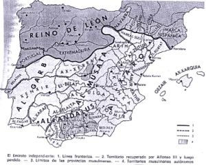

De: La Frikipedia, la enciclopedia extremadamente seria.
De: La Frikipedia, la enciclopedia extremadamente seria. De: La Frikipedia, la enciclopedia extremadamente seria.
| De la serie imperios antiguos: | |||||
| الأندلس Al-Ándalus | |||||
| |||||
| Lema: Allāhu Akbar | |||||
| Himno: No existían en la época
| |||||
| 
| |||||
| Capital(es) | Córdoba | ||||
| Mayor ciudad | Ídem | ||||
| Lenguas oficiales | Árabe y visigórdico | ||||
| Religión oficial | Islamismo sectario | ||||
| Gobierno | califato, emirato o reinos de taifas | ||||
| Emir, califa, o rey de taifa | Primero: Abd al-Rahmán I Último: Boabdil | ||||
| Fecha de fundación | 711 | ||||
| Caída | 1492 | ||||
| Edad de oro | años 900 a 1000 | ||||
| Periodo de Estancamiento o reseción | 1031 | ||||
| Máxima Extensión | Casi toda España y un poco de Francia | ||||
| Forma de economía | a base de aceifas | ||||
| Estados que se despacho | Pocas, algún castillo leonés | ||||
| Población calculada | Un par de milloncejos | ||||
| Moneda | Dinar de oro | ||||
| Zona horaria | GTM+1 | ||||
| Legado(s) | Los sueños yihadistas de Osama | ||||
| ¿Por que se vino abajo? | desde 1212 | ||||
| | |||||
Al-Ándalus fue el nombre dado a la Península Ibérica cuando esta fue invadida por los moros procedentes de Arabia durante una de sus Yihads. Los moros infieles estuvieron en Al-Ándalus entre 711 y 1492, aunque cada vez con menos territorios, gracias a Dios y a los valerosos y piadosos caballeros cristianos, que hicieron la Reconquista para echarlos.
Al-Ándalus se fundó cuando los visigordos fueron derrotados por las tácticas militares cartaginesas y macedonias del gran general Mahmud Ahmadineyad, natural según fuentes, de La Meca o algún poblado miserable de Persia. Primero fue un emirato, luego un califato, y luego se independizaron muchos reinos y fue una especie de Sacro Imperio sin emperador. En 1492 sólo quedaba Granada en manos de los infieles.
Hay que decir que durante la época de Al-Ándalus combatieron el Cid, los almogávares, Jaume Jesucrist I y Ansar Matamoros, y se inventaron los dulces de navidad, los almohades, la Inquisición española y el vino en porrón. Los jefes andalusíes más destacados fueron Abd al-Rahmán I, Abd al-Rahmán III y Al Manzor.
Actualmente Osama Bin Laden y sus guerreros yahadistas con turbantes, cimitarras, camellos, Kalashnikovs y RPGs, quieren reconquistar Al-Ándalus[1], algo que los Tercios Viejos la Legión Española impedirá.
El origen de la vil palabrota mora "Al-Ándalus" es objeto de acalorados debates y de una polémica sólo igualada por las acciones arbitrales futbolísticas. Actualmente, amén de una sola verdad, los eruditos hispanos y sus colegas lusitanos postulan varias tesis de escaso rigor. La Real Academia Española no acepta ninguna de ellas, y todas son consideradas heréticas por la Santa Sede. Hay dos teorías: la vándala y la muslime.
Los vándalos eran un belicioso pueblo germánico enemigo de Atila el Huno. Este vino con sus hordas turco-mongólicas de elefantes con ballestas y los echó de Germania. Los vándalos emigraron hasta Andalucía. A la zona le pusieron el nobre de Vandalusia. Debido a los alercados que causaban, rompiendo mobiliario urbano de las vías romanas, organizando orgías en tabernas de Hispalis y Augusta Emerita, Roma avisó a los Visigordos para que expulsaran a los vándalos. Los pobres no tuvieron más remedio que huir al norte de África, donde instalaron un reino de piratas. Los bizantinos destruyeron a los vándalos, pero los moros ya habían oído hablar de ellos, así que, según teólogos calvinistas tudescos y lingüistas reputados, este es el origen del término Vandalusia, y no las paparruchas moriscas.
Los viles visigordos cuando llegaron a Hispania y echaron amablemente a los romanos, comenzaron a conquistar la tierra. Cuando sólo resistían algunos enemigos en el norte y el Reino Suevo hicieron un sorteo para repartirse las tierras de Andalucía. Las llamaron "Landa-hlauts", que en castellano es Tierras de sorteo. Los sarracenos se enteraron de esto cuando llegaron a Gibraltar y sufrieron los robos de granjeros andaluces cabreados porque no les había tocado ni un racano metro cuadrado de arena polvoriente. Algunos creen que este es el motivo de que la conquista fuese rápida: los aldeanos locales se unieron a los moros confiando en que ellos les devolverían la libertad.
Un buen mal día del santo año de 711, una gran armada de pateras musulmanas atestadas de camellos y talibanes a camello desembarcó en Gibraltar, masacrando a la guarnición de Royal British Highlanders instalada allí. Los comandantes infieles era Tariq y "El Musaraña", encargado de matanzas y otros asuntos políticos. Los visigordos enviaron a su ejército a frenar a los invasores, pero los moros eran unos 15.000, todos armados con AK-47. No hubo nada que hacer. En media hora no quedaba visigordo con vida en España (pero sí en Galicia, Asturias y Euskadi). Con esta suerte, los moros llegaron a Sevilla primero, y luego a Toledo. Ahí se quedaron y comenzaron a levantar mezquitas aquí y allá.
Luego, en el no tan santo año de 722, ya habiendo conquistado Barcelona y el sur de Francia, llegaron a Asturias, donde un superhéroe de le época, Don Pelayo, a base de espada, hacha y poción mágica, envió al ejército moro de vuelta a Córdoba con algunos cientos de soldados menos. Sin embargo, el emirato ya estaba instalado, y el emir de turno ya tenía su harén y su guardia cristiana mercenaria instalada.
Unos años más tarde, llegó a Al-Ándalus un tipejo de provincias (de Siria, concretamente), Abd al-Rahmán I. Su familia había servido para paliar el hambre en el cuerno de África por órdenes de unos nobles que les habían usurpado el trono. Sólo Abd salvó el pellejo y no acabó el las fauces de los pobres y pacíficos somalíes. Lo que hizo al llegar fue lanzar a los cocodrilos al gobernados de Al-Ándalus y ponerse a sí mismo como emir supremo.
Empezó a construir la Alhambra y a hacerse abrigos con la piel de los mozárabes. También inició pacíficas campañas de saqueo contra los peligrosos y famélicos aldeanos cristianos del norte. En esta época llegaron muchos judíos desde Israel, sabedores de la tolerancia de la zona.
Cuando el emir glotón y bebedor sin sed Abd al-Rahmán III se enteró de que califa era más que emir, se autoproclamó califa sagrado y deítico de Al-Ándalus. Las cosas le salieron bien: el Imperio Bizantino y el Sacro Imperio dejaron de acosarlo con asesinos. También hubo una parte mala: A los cristianos del norte les tocó pasarlas canutas por las campañas de elefantes con cañones y camellos con ametralladoras ligeras. Cuando llegó al poder el vil Al-Manzor, las cosas se pusieron muy feas. Comenzó a asaltar iglesias y a lanzar bombas sobre grupos de aldeanos.
A Dios gracias, en 1006, una coalición de caballeros ebrios le robaron su mágico tambor y ya no pudo dirigir a sus soldados, perdiendo así un conjunto de 12 batallas en las que sufrió 624.922 muertos, 1.374.134 heridos y 333.249 prisioneros, según archivos vaticanos y crónicas cristianas de la época. El califato acabó con una típica guerra civil muy benigna.
Cuando los rebeldes se hicieron una tortilla de carne con alcachofas y queso con el último califa, un tal Hashim Aladino, todos los jefecillos privinciales que disponían de más de cincuenta soldados y de unos cuantos esclavos eunucos, se independizaron por su cuenta. Así se dedicaron a los asuntos importantes de verdad: a vivir y a comer. Los cristianos del norte creyeron que era una inocentada. Cuando asaltaron Toledo en busca de albóndigas y leche, descubrieron un gran alijo de hachís. Se dieron cuenta de todo, pero ya era tarde. Llegaban los almorávides en submarinos desde el Sáhara...
Como el gran jefe Osama veía que en España sus fieles locos perdían terreno, decidió enviar al sultán Pepiño a ayudarlos. Este disponía de todo el armamento soviético capturado por los talibanes en Afganistán. Así les fue fácil conquistar los reinos de taifas y enviar a los taifas arriba. El rey de Castilla, Alfonso XII, hijo de Isabel II, trató de hacerles frente enviando al general Martínez Campos a enfrentarse a ellos, pero el resultado de la batalla fue malo. Los almorávides, con sus columnas de francotiradores hicieron trizas a los jinetes castellanos con rodela y lanza.
El Cid llegó a Valencia para ayudar. Curiosamente, su llegada coincidió con el fenómeno por el cual el mar se tornó rojo en Valencia durante una semana. Los almorávides eran duros, pero por suerte, Córdoba se rebeló. Al saber que los muy traidores pretendían convertirse al druidismo, Osama envió a soldados aún más bárbaros: los almohades, fabricantes de almohadas.
Feos, malos y peligrosos, deseosos de comer gatitos y cristianos desvalidos, sobre todo curas y monjas. Aniquilaron al ejército castellano en 1195 lanzando una cabeza nuclear sobre las tropas. Su rey era un tal Al-Nasir, fanático visionario que pretendía conquistar el mundo y convertir la Basílica de San pedro del Vaticano en una mezquita. Por una vez, Castilla, Aragón, Navarra y Portugal (excepto León)se unieron para cazar infieles. En la Batalla de Las Navas de Tolosa, la más decisiva en la historia hasta el duelo de OK Corral, no quedó moro vivo.
Sólo Al-Nasir, al que luego encontraron colgado en su piso de Albacete. Así comenzaba el asalto final cristiano a los castillos infieles del sur. El deseo de encontrar el tesoro de Al Manzor hacía que incluso viniesen caballeros franceses y banqueros judíos.
Hacia 1250, todo moro que iba más al norte de Granada acababa en el puré de gachas de los frailes mendicantes castellanos. Los caballerotes del norte tardaron sólo 220 años en acabar con esos cuatro sarracenos famélicos y desvalidos que quedaban. Los rayos catódicos reyes católicos aprovecharon la guerra entre El Chacal y don Boabdil el infiel para enviar a su ejército de escopeteros de asalto a barrer al infiel de la Alhambra. Esto fue una cruzada en toda regla. El premio era el permiso del Papa de Roma para poder enviar a un embustero en carabela a la India en busca de películas de Bollywood y de especias como el ketchup o las galletas rancias.
Por cierto, el moro Boabdil lloró como un marica cuando fue expulsado, ¡Kwahahahahaha! Le pidió ayuda a los otomanos y estos volvieron en el Fenerbahçe, los jenízaros, los vendedores de alfombras y todas esas típicas bromas del ejército turco.
Fue precaria, totalmente precaria. El lugar de mayor importancia económica de la típica ciudad mora era el zoco, una especie de mercado. Allí no se vendía nada, pero solía ser un sitio común de asesinatos, ejecuciones y predicas de descerebrados fanáticos comunistas. Dada la mala organización de la economía de los emires, los soldados sarracenos eran los que aportaban el dinero para comprar productos en mercados internacionales. El dinero venía de sanguinarias incursiones en aldeas cristianas, donde se obtenían también esclavos o comida para el perro.
Otras actividades económicas fueron: la piratería, sobre todo desde las islas Baleares; el juego de los dados, que realizado contra extranjeros, servía para desvalijarlos de su oro; y alguna otra cosa habría... la venda del Corán de casa en casa y otras, etc, etc, etc... Ahora no viene al caso.
Los castillos templarios de la época eran pocilgas llenas de mierda y viejos con granos, comparadas con cualquier edificio andalusí. Al principio los moros construían sólo mezquitas, como la de Córdoba, importante centro de captación de locos para combatir a los occidentales en las cruzadas. Dicho edificio tenía elementos visigórdicos, romanos, bizantinos, nazis y también había una bella mampostería de mármol azteca en los lavabos. El interior se construyó para que todo el que entrase se perdiese, por eso había cien columnas dentro de la sala grande, todas con arcos inspirados en el mundillo de Mordor y de Sauron. El minarete era un cohete V2 alemán incrustado a martillazos.
Otro edificio importante era la torre del Oro, donde se guardaba todo el oro robado a los mendigos leprosos y a otros tiránicos opresores. El edificio es como la Giralda, pero la versión reducida y con sobrepeso. Este edificio sale en el juego para PC Age of Empires II, y es la maravilla de los españoles. El creador del juego era un bastardo...
Sin embargo, el edificio de arquitectura sarracena más bonito era la Alhambra. Este edificio era propiedad del moro Boabdil. Si entraban sin su permiso te degollaban en la sala de las decapitaciones, de inspiración gótica. Otro espantoso lugar era el patio de los leones, donde se arrojaba a prisioneros cristianos a una manada de leones rabiosos y muertos de hambre. La Alhambra fue propuesta para ser una de las siete nuevas maravillas del mundo en 2007, pero Bush amañó la votación y no se consiguió.
Los infieles de Córdoba tenían buenos científicos. En el campo de la ciencia militar destacaron Abu Musab al Zarqaui, que inventó una manguera que permitía rociar con vómito a los soldados cristianos, y Mohamed V, rey que ideó las granadas de fragmentación llenas de pólvora, trozos de vidrio y de pimienta negraaaa...aachís!!!
Se cuenta también que los moros inventaron el papel, pero los chinos dicen lo mismo. Para saber cuales dicen la verdad hay que aplicar un sencillo razonamiento: ¿Cuáles de los dos quieren dominar el mundo? Los dos, por lo tanto, no lo inventaron ni unos ni otros. Fin. Lo que si que inventaron los infieles andalusíes fue vino en sifón.
Abu Muhammad Abdallah Ibn Ahmad Ibn al-Baitar Dhiya al-Din al-Malaqi fue el moro más importante. Hizo un tratado detallado sobre 1400 tipos de drogas plantas medicinales. Codiciado por Robespierre, Hitler y otros mandamases, actualmente está en poder de peligrosos narcotraficantes. Se decía que en la página 23, en el reverso, estaba escondido el mapa de la fuente de la juventud.
En Al-Ándalus siempre hubo muchos filósofos. Se decía que hasta los panaderos lo eran. Todos filosofaban sobre qué era más bueno, si el mazapán o la carne cruda de borrego. Los seres superiores que lograban desentrañar la respuesta a esta pregunta pensaban ya en payasadas varias poco funcionales para el tonto del culo medio. Un tal Averrores empezó a leer cómics de Platón y Aristóteles, pero pronto fue expulsado a granadazos. Ahí acabó la burda historia filosófica de Al-Ándalus.
Autor(es):